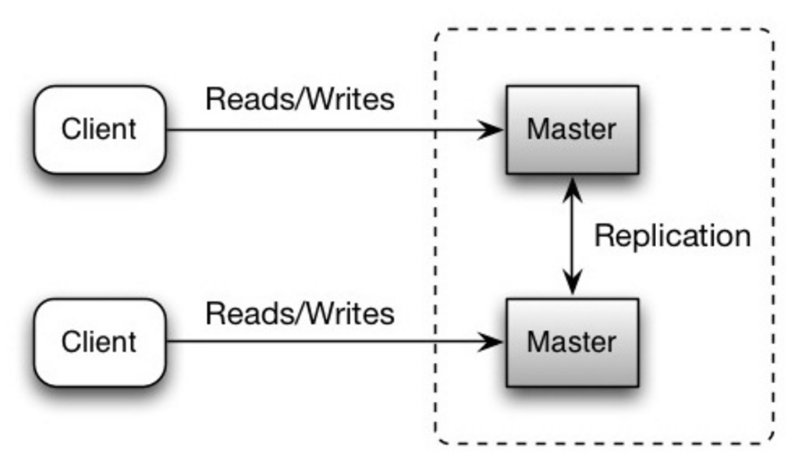
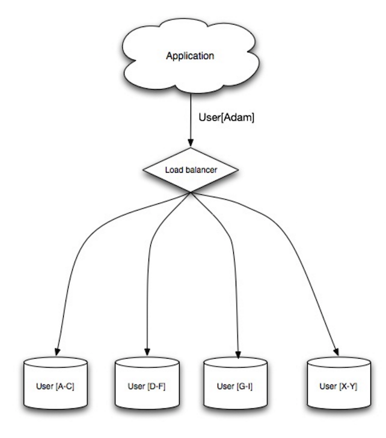
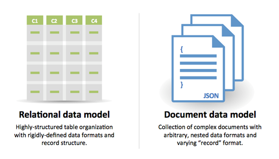
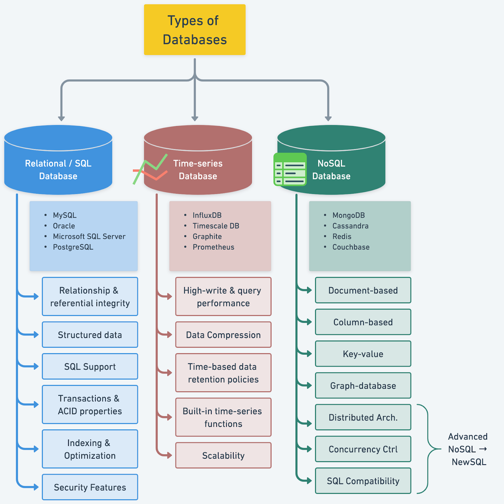

🗄️ Databases
Transactions and isolation levels bite distributed systems engineers constantly. The gaps are usually invisible until something goes wrong in prod.
Transactions & ACID
A transaction is a group of operations that execute as a single unit. Either all succeed and are committed, or all fail and are rolled back. This seemingly simple guarantee is what makes it safe to transfer money, place orders, or do anything that requires multiple writes to stay consistent.
ACID — What Each Property Actually Means
Atomicity means all-or-nothing. If your transaction updates three rows and the third write fails, the first two are rolled back. Nothing is left in a half-written state. This is implemented via the Write-Ahead Log (WAL) — changes are logged to disk before being applied to data pages, so on crash recovery the database can roll back incomplete transactions.
Consistency means the database moves from one valid state to another. Your schema constraints (NOT NULL, UNIQUE, FOREIGN KEY, CHECK) are enforced at commit time. If a transaction would violate them, it's rejected. The application is responsible for the higher-level invariants (like "account balance must never go negative" — enforce this with a CHECK constraint or application logic).
Isolation means concurrent transactions don't interfere with each other. Without isolation, Transaction A could read data that Transaction B is in the process of modifying — seeing a partially-updated world. Full isolation (serializability) makes concurrent transactions appear to execute one at a time, but this is expensive. SQL databases offer a spectrum of isolation levels as a performance tradeoff.
Durability means once committed, data survives crashes. PostgreSQL guarantees this by fsyncing WAL entries to disk before acknowledging a commit. If the machine loses power immediately after a commit, the data is recoverable from the WAL on restart.
Isolation Levels
The SQL standard defines four isolation levels, each preventing a different class of anomaly:
| Level | Dirty Read | Non-repeatable Read | Phantom Read |
|---|---|---|---|
| Read Uncommitted | possible | possible | possible |
| Read Committed (PG default) | prevented | possible | possible |
| Repeatable Read | prevented | prevented | possible* |
| Serializable | prevented | prevented | prevented |
* PostgreSQL's Repeatable Read also prevents phantom reads due to its MVCC snapshot implementation.
- Dirty read: reading uncommitted data from another transaction. If that transaction rolls back, you read data that never existed.
- Non-repeatable read: reading the same row twice within a transaction and getting different values because another transaction committed between your reads.
- Phantom read: a query returns different rows the second time because another transaction inserted/deleted rows matching your WHERE clause.
The default Read Committed level catches most problems. Use Repeatable Read or Serializable when you need to read a consistent snapshot (e.g., generating a report that queries multiple tables and needs them to agree). PostgreSQL implements Serializable with SSI (Serializable Snapshot Isolation) — it avoids locking by detecting conflict cycles, so it's less prone to deadlocks than traditional lock-based serialization.
Locking: Optimistic vs Pessimistic
Pessimistic locking: acquire a lock before reading, hold it until the transaction commits. Other transactions block on that row. Use when contention is high and you can't afford to retry.
-- Lock the row for update. Other transactions block until this commits.
SELECT * FROM orders WHERE id = $1 FOR UPDATE;
UPDATE orders SET status = 'processing' WHERE id = $1;Optimistic locking: don't lock on read. Include a version number (or updated_at timestamp) in your update condition. If someone else modified the row between your read and write, the UPDATE matches zero rows — you detect the conflict and retry.
-- Read with version
SELECT id, status, version FROM orders WHERE id = $1;
-- Update only if version hasn't changed
UPDATE orders
SET status = 'processing', version = version + 1
WHERE id = $1 AND version = $old_version;
-- If this returns 0 rows, conflict detected — retry the whole operationOptimistic locking is preferred when conflicts are rare — no blocking means better throughput. Pessimistic is better when conflicts are frequent, making retries expensive.
Deadlocks occur when Transaction A holds lock X and wants lock Y, while Transaction B holds lock Y and wants lock X. PostgreSQL detects this cycle and aborts one transaction (the one with least work done). Prevention: always acquire multiple locks in the same order across transactions.
WAL & Durability in Practice
The Write-Ahead Log is central to both durability and replication in PostgreSQL. Every change is first appended to the WAL (an append-only log on disk), then applied to data pages. On crash, the database replays the WAL from the last checkpoint to recover committed transactions and discard uncommitted ones.
Streaming replication works by sending the WAL stream from primary to replicas in real time. Replicas replay the same WAL, staying in sync. This is why replicas can serve read queries — they're applying the same operations as the primary, just slightly behind.
fsync = on (the default) guarantees durability by flushing WAL to disk before acknowledging commits. Disabling fsync is sometimes done for speed in dev/test environments — never in production. Data loss on power failure is certain with fsync off.
Indexing
An index is a separate data structure that the database maintains alongside your table to speed up lookups. Without an index, every query that filters on a column requires a sequential scan — reading every row in the table. With a well-placed index, the database navigates directly to the relevant rows.
The fundamental trade-off: indexes speed up reads but slow down writes. Every INSERT, UPDATE, and DELETE must update all indexes on the table. A table with 10 indexes has 10 extra write operations per row modification. Index thoughtfully.
B-Tree Indexes (the Default)
A B-tree is a balanced tree where each node stores sorted keys and pointers to child nodes or heap pages. Lookups, range scans, and sorts on indexed columns all run in O(log n). This is the right index for almost everything: equality (=), ranges (>, <, BETWEEN), and prefix matches (LIKE 'foo%').
-- Basic index
CREATE INDEX idx_orders_user_id ON orders(user_id);
-- Multi-column index. Column order matters:
-- this index supports queries filtering by (user_id),
-- or (user_id AND status), but NOT status alone.
CREATE INDEX idx_orders_user_status ON orders(user_id, status);
-- Rule: put the most selective column first, unless your
-- query always filters on the second column too.Covering Indexes
A regular index lookup has two steps: find the row's location in the index, then fetch the row from the heap. A covering index stores extra columns in the index itself, eliminating the heap fetch entirely:
-- Without covering index: index scan + heap fetch for each row
CREATE INDEX idx_orders_user ON orders(user_id);
SELECT user_id, status, created_at FROM orders WHERE user_id = $1;
-- ^ needs to hit the heap for status and created_at
-- With covering index: index-only scan, no heap access
CREATE INDEX idx_orders_user_cover ON orders(user_id)
INCLUDE (status, created_at);
-- ^ all needed columns are in the indexIndex-only scans can be dramatically faster for frequently-run queries on large tables. Use EXPLAIN to confirm Index Only Scan is being used.
Partial & Expression Indexes
-- Partial index: only index rows matching a condition.
-- Smaller, faster, more targeted.
CREATE INDEX idx_orders_pending ON orders(created_at)
WHERE status = 'pending';
-- Perfect for: "find the oldest pending orders"
-- Expression index: index on a computed value
CREATE INDEX idx_users_email_lower ON users(LOWER(email));
-- Supports: WHERE LOWER(email) = LOWER($1)Other Index Types
- Hash: O(1) equality lookups only. No range support. Rarely better than B-tree in practice.
- GIN (Generalized Inverted Index): for full-text search, JSONB containment (
@>), array operators, andpg_trgmtrigram search. Slow to build, fast to query. - BRIN (Block Range Index): tiny index that stores min/max values per range of blocks. Only useful for naturally ordered data (auto-increment IDs, timestamps). Extremely small — good for time-series data where you always query by time range.
Query Optimization
The PostgreSQL query planner generates an execution plan for every query. EXPLAIN shows you what the planner chose; EXPLAIN ANALYZE actually executes it and shows what happened vs what was estimated. This is your primary tool for understanding and fixing slow queries.
Reading EXPLAIN ANALYZE
EXPLAIN ANALYZE
SELECT u.name, COUNT(o.id)
FROM users u
JOIN orders o ON o.user_id = u.id
WHERE u.created_at > '2024-01-01'
GROUP BY u.id;Key things to look for:
- Seq Scan on large tables — a sequential scan reading millions of rows when you expected an index scan. Either the index is missing, the planner estimates it's faster to seq scan (check row estimates), or the query can't use the index as written.
- Rows estimate vs actual rows — large discrepancies (e.g., estimated 100 rows, actual 1,000,000) mean stale statistics. Run
ANALYZE table_nameto refresh. The planner's row estimates drive almost every other decision. - Nested Loop on large result sets — fine for small tables, catastrophic for large ones. For large joins, Hash Join or Merge Join is usually better.
- High cost numbers — the cost is in arbitrary units (roughly: disk page reads). The outer parenthetical is (startup cost, total cost). High startup cost on a Nested Loop means the inner loop runs many times.
The three join strategies: Nested Loop (iterate outer, scan inner for each row — good when inner is small or indexed), Hash Join (hash the smaller table, probe with the larger — good for large unsorted tables), Merge Join (merge two sorted inputs — good when both sides are already sorted or can be sorted cheaply).
The N+1 Problem
One of the most common performance killers in backend applications. Instead of one JOIN, the ORM executes one query to fetch N parent records, then N separate queries to fetch each parent's children:
-- N+1: fetches all users, then one query per user to get their orders
const users = await db.query('SELECT * FROM users');
for (const user of users) {
user.orders = await db.query('SELECT * FROM orders WHERE user_id = $1', [user.id]);
}
// Result: 1 + N queries (e.g., 1 + 10,000 = 10,001 queries)
-- Fix: one query with a JOIN
const result = await db.query(`
SELECT u.*, o.*
FROM users u
LEFT JOIN orders o ON o.user_id = u.id
`);
-- Or: two queries — fetch all users, then all relevant orders in one shot
const users = await db.query('SELECT * FROM users');
const userIds = users.map(u => u.id);
const orders = await db.query('SELECT * FROM orders WHERE user_id = ANY($1)', [userIds]);Watch for N+1 in ORMs (Sequelize, SQLAlchemy, Active Record). Use your ORM's eager loading (include/joins) to fetch related data in one query. Enable query logging in development to catch N+1 before it hits production.
Common Optimization Patterns
- Avoid SELECT * — fetching unused columns wastes bandwidth and prevents index-only scans. Select only the columns you need.
- Use LIMIT with ORDER BY — but ensure the ORDER BY column is indexed, otherwise PostgreSQL sorts the entire result set before applying LIMIT.
- Keyset pagination over OFFSET —
OFFSET 50000scans and discards 50,000 rows. Keyset pagination (WHERE id > $last_seen_id ORDER BY id LIMIT 20) is O(1) regardless of page number. - pg_stat_statements — the PostgreSQL extension that tracks query statistics (total calls, mean time, total time). Essential for finding your slowest queries in production:
SELECT query, mean_exec_time, calls FROM pg_stat_statements ORDER BY mean_exec_time DESC LIMIT 20.
Replication, Sharding & Connection Pooling
Replication
PostgreSQL's default replication model is primary-replica (also called primary-standby). All writes go to the primary. Replicas receive and apply the WAL stream, staying in sync. Replicas can serve read queries.
Synchronous replication: the primary waits for at least one replica to confirm it has written the WAL before acknowledging the commit to the client. Zero data loss on failover, but higher write latency (two network round trips). Configure with synchronous_standby_names.
Asynchronous replication (the default): the primary acknowledges commits immediately and sends WAL to replicas in the background. Lower write latency, but a failover might lose the last few seconds of transactions. The replica lag metric tells you how far behind each replica is.

Multi-master replication allows writes to go to any node in the cluster. Each node accepts writes and replicates to the others. Useful for multi-region setups (each region has a local primary, reducing write latency for geographically distributed users). The hard part is conflict resolution: two nodes accept a write to the same row simultaneously. Strategies: last-write-wins (by timestamp — unreliable due to clock skew), custom merge functions, or CRDT-based data structures. Use multi-master only when single-primary latency is genuinely unacceptable.

Read replicas scale your read traffic. Route reads that can tolerate slight staleness to replicas (reports, dashboards, search). Route reads that require freshness (read-your-own-writes) to the primary. Your application needs to know about this routing — some ORMs and connection poolers handle it automatically.
Sharding
Sharding horizontally partitions data across multiple independent database instances. Each shard holds a subset of rows. You shard when a single primary can no longer handle write throughput or when data size exceeds what a single instance can handle efficiently.
Shard key selection is the critical decision and it's extremely hard to change later. A bad shard key creates hot spots: one shard receives a disproportionate share of traffic.
- Bad shard key: created_at (by day) — all writes today go to one shard. The "hot" shard handles everything while others sit idle.
- Bad shard key: country_code — the US shard might get 40% of traffic, making scaling uneven.
- Good shard key: user_id (hashed) — high cardinality, writes distributed evenly across users, most queries filter by user_id anyway so they route to one shard.
Sharding strategies: Range-based (user_id 1–1M on shard 1, 1M–2M on shard 2 — easy range queries, hot spots possible), Hash-based (shard = hash(user_id) % N — even distribution, hard to range query, painful to rebalance), Directory-based (lookup table maps keys to shards — flexible but adds a hop).
The hard parts of sharding: cross-shard JOINs don't work (denormalize or move joins to the application layer), cross-shard transactions require two-phase commit or sagas, rebalancing when adding shards requires live data migration. Start with a single well-tuned primary + read replicas. Shard only when you genuinely can't scale further.


Federation
Federation (also called functional partitioning) splits the database by function — separate databases per domain — rather than horizontally by row. Instead of one monolithic database with all tables, you have a users database, an orders database, and a products database. Each is smaller, independently scalable, and can be independently tuned. The tradeoff: cross-domain joins are gone. Application code must do the joining. Federation is a step before sharding — easier to implement but less granular.
Connection Pooling
PostgreSQL spawns a process per connection — forking is expensive. With 500 application pods each holding 10 connections, you're hitting the default max_connections = 100 immediately and burning memory on connection overhead at scale.
PgBouncer is the standard connection pooler for PostgreSQL. It maintains a pool of server connections and multiplexes many client connections onto fewer server connections.
PgBouncer modes:
- Session mode: one server connection per client session. No actual pooling benefit for long-lived connections.
- Transaction mode (recommended): the server connection is returned to the pool after each transaction completes. One server connection can serve many clients as long as they're not in a transaction simultaneously. Breaks prepared statements and
SETcommands that persist across transactions. - Statement mode: returned after each statement. Breaks multi-statement transactions entirely. Rarely useful.
Pool sizing rule of thumb: (2 × num_cpu_cores) + num_disk_spindles server connections is a reasonable starting point. For cloud databases, start with 2 × vCPU count. Cloud-managed options: AWS RDS Proxy, Supabase PgBouncer, PlanetScale's connection proxy.
Advanced PostgreSQL & NoSQL
Window Functions
Window functions apply a function over a set of rows related to the current row without collapsing them into a group the way GROUP BY does. They're how you write rankings, running totals, and "previous value" comparisons in pure SQL.
-- Rank orders by amount within each user, largest first
SELECT
user_id,
order_id,
amount,
RANK() OVER (PARTITION BY user_id ORDER BY amount DESC) AS rank
FROM orders;
-- Running total of revenue, ordered by date
SELECT
date,
daily_revenue,
SUM(daily_revenue) OVER (ORDER BY date) AS running_total
FROM daily_revenue;
-- Previous and next row values (great for detecting gaps)
SELECT
id,
created_at,
LAG(created_at) OVER (ORDER BY created_at) AS prev_event,
LEAD(created_at) OVER (ORDER BY created_at) AS next_event
FROM events;Key functions: ROW_NUMBER() (unique seq number, no ties), RANK() (gaps for ties), DENSE_RANK() (no gaps), LAG(col, n)/LEAD(col, n) (look backward/forward n rows), FIRST_VALUE()/LAST_VALUE(), NTILE(n) (divide rows into n buckets).
JSONB
PostgreSQL's JSONB stores JSON as parsed binary — keys are deduplicated, order is not preserved, but queries are fast. Use it for flexible schemas, semi-structured data, or when you need some columns to vary per row.
-- JSONB operators
SELECT metadata -> 'address' -- returns JSON
SELECT metadata ->> 'address' -- returns text
SELECT metadata #>> '{address,city}' -- nested path as text
SELECT metadata @> '{"country":"US"}' -- containment check (indexable)
SELECT metadata ? 'phone_number' -- key existence (indexable)
-- GIN index for fast containment and key queries
CREATE INDEX idx_users_metadata ON users USING GIN (metadata);
-- For a frequently-queried field, a generated column + B-tree is faster
ALTER TABLE users
ADD COLUMN country TEXT GENERATED ALWAYS AS (metadata->>'country') STORED;
CREATE INDEX ON users(country);JSONB vs JSON: JSONB is almost always what you want. JSON preserves input format (useful for audit logging) but must parse on every access. JSONB parses once at write time and stores efficiently. The performance difference matters at query time.
NoSQL — When to Actually Use It
PostgreSQL handles most use cases well (flexible schema via JSONB, full-text search, time-series with TimescaleDB). Reach for NoSQL when:
- Write throughput exceeds one primary's capacity — Cassandra and DynamoDB have native horizontal write scaling. PostgreSQL sharding is painful; Cassandra sharding is designed in from day one.
- Access patterns are fixed and known upfront — Cassandra queries must be designed around your partition key and clustering columns. If you know exactly how data will be queried, Cassandra is extremely fast. If you need ad-hoc queries, use PostgreSQL.
- Sub-millisecond reads at extreme scale — Redis for caching and hot data paths, DynamoDB with DAX. Not because PostgreSQL is slow, but because these systems are purpose-built for this.
- Graph relationships are first-class — social graphs, recommendation engines, fraud detection. Neo4j traverses deep relationship graphs far faster than SQL JOINs.
NoSQL types at a glance: Document (MongoDB, Firestore) — flexible JSON docs, rich queries. Key-Value (Redis, DynamoDB) — simplest, fastest. Wide-Column (Cassandra, Bigtable) — write-optimized LSM tree, great for time-series. Graph (Neo4j) — relationships as first-class citizens. Time-Series (InfluxDB, TimescaleDB) — optimized for timestamped append-only data.



